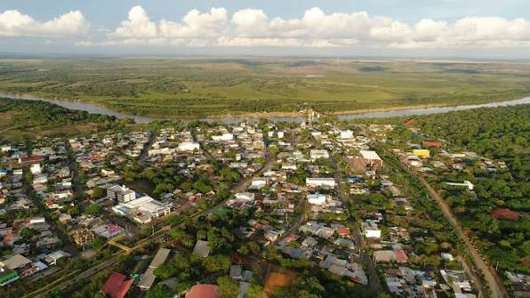

Puerto Gaitán, Meta

Puerto Gaitán fue fundado en 1932 a orillas del río Meta. Su nombre honra al caudillo liberal Jorge Eliécer Gaitán. Con el paso de los años se convirtió en un punto estratégico para la ganadería, la agricultura y la industria petrolera del oriente colombiano.
Gracias a su ubicación sobre el río Meta, el municipio creció como puerto fluvial y comercial. Hoy es uno de los municipios más grandes del departamento y un referente económico de la región de los Llanos Orientales.
La cultura de Puerto Gaitán está marcada por las tradiciones del llano: el joropo, el coleo, el trabajo ganadero y la calidez de su gente.